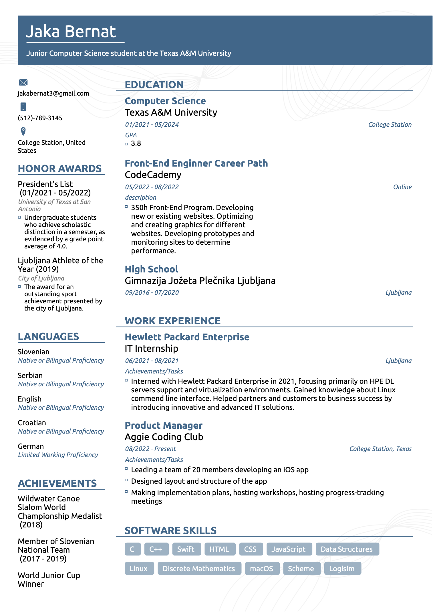
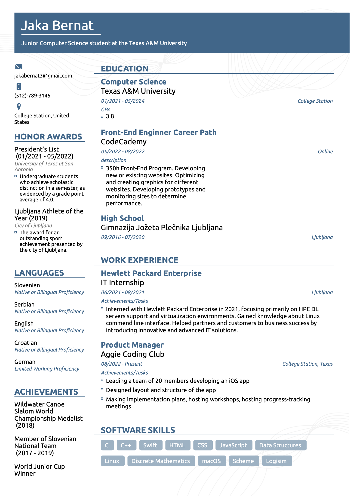

Junior Computer Science student at the Texas A&M University. Named to the President's List in recognition of outstanding scholarship for achieving a 4.0 GPA during Spring 2021, Fall 2021 and Spring 2022 semesters.
Interned with Hewlett Packard Enterprise in 2021, focusing primarily on HPE DL servers support and virtualization environments including VirtualBox, Microsoft Windows and Linux. Helped partners and customers to business success by introducing innovative and advanced IT solutions.


 
